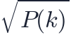
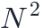
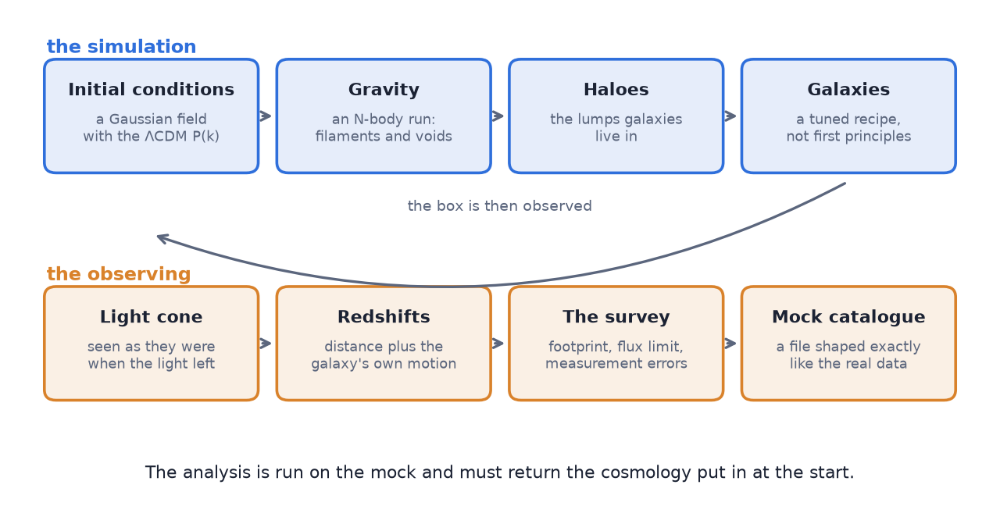
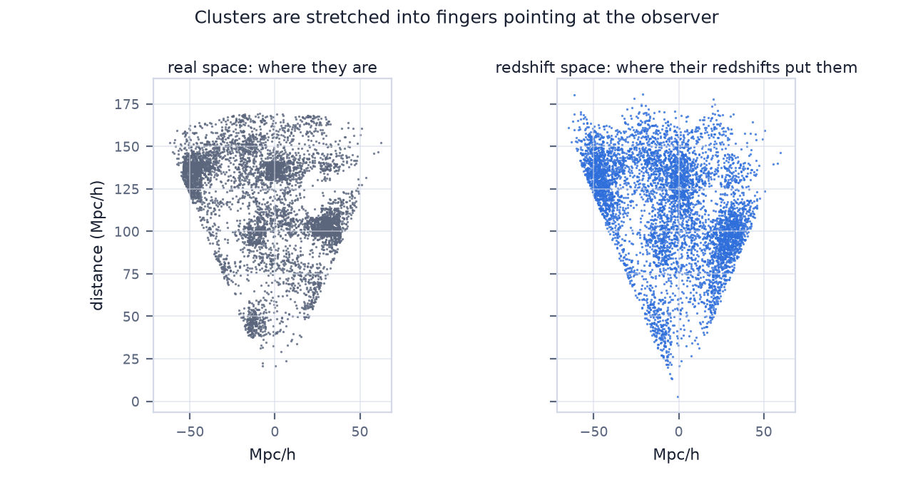
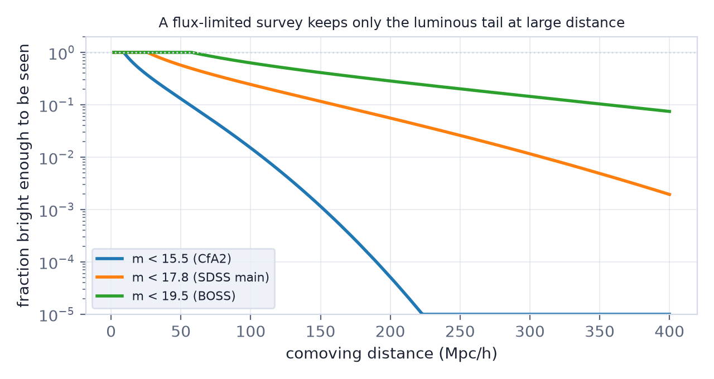
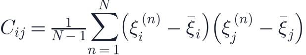
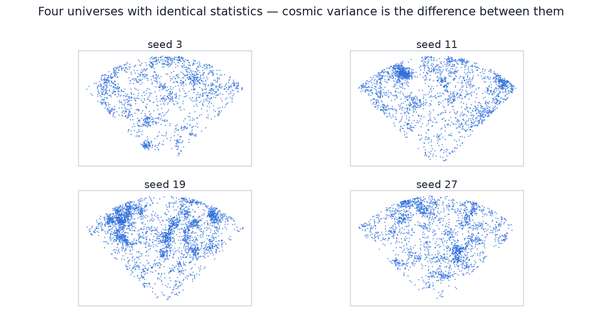

In this lesson you will learn
|
The experiment we cannot run
Every other experimental science changes something and watches what happens. We cannot. There is one universe, we see it from one place, and it has already run once. Everything in Level 7 so far has been about squeezing that single sample for information: reading its plots (L7.1), fitting it (L7.2), sampling the posterior (L7.3), designing the survey that collects it (L7.4).
A simulation closes the loop. It is a universe whose cosmology you chose, so you know the right answer before you start. Run your analysis on it. If the analysis gives back what you put in, it works. If it does not, you have found a bug — in the code, in the method, or in your understanding — and you have found it before you published a claim about the real universe.
What a simulation is for Not mainly to predict what the universe looks like. Mainly to test the analysis: a simulation is the only place where you can compare an answer with the truth. |
The chain
1. Initial conditions
Inflation leaves a Gaussian random field: every Fourier mode is an independent
random number whose typical size is set by the power spectrum  of
L5.4. So the simulation starts by drawing one.
of
L5.4. So the simulation starts by drawing one.
Pick a seed. Draw white noise on a grid, multiply each mode by

, transform back — and you have a possible early universe, with the statistics we measure in the CMB and nothing else specified. Change the seed and you get a different universe with the same statistics. That is not a nuisance; it is the point, and we come back to it below.The particles are then displaced from a regular grid by the Zel'dovich approximation: move each one along the gradient of the gravitational potential, which is exactly how linear theory says matter starts to fall.
2. Gravity
From there it is Newton's law, several billion times over. An N-body code computes
the force on every particle and steps it forward. The largest runs today follow
more than  particles in boxes a few Gpc across — the fastest part of the
calculation is not the physics but keeping the force computation from costing
particles in boxes a few Gpc across — the fastest part of the
calculation is not the physics but keeping the force computation from costing

, which tree codes and particle-mesh grids solve.S16 runs a small two-dimensional version of exactly this loop, which is enough to watch a smooth field turn into filaments, knots and voids.
What the particles are not The particles are not dark-matter particles. Each one weighs |
3. From dark matter to galaxies
Gravity gives dark-matter haloes. Telescopes see galaxies, and no simulation can follow gas, star formation, supernovae and black-hole feedback across a Gpc box from first principles. So the last step is a recipe:
- Halo occupation — a statistical rule for how many galaxies of a given type sit in a halo of a given mass, with a few free parameters tuned to reproduce the observed clustering.
- Semi-analytic models — simplified equations for gas cooling, star formation and feedback, run on the merger history of each halo.
- Hydrodynamic simulations — the gas physics included directly. The most faithful and by far the most expensive, so the boxes are small.

4. Observing it
A simulation box is not a catalogue. To compare with data it has to be observed:
- Put an observer somewhere and build a light cone — objects are seen at the time their light left them, not all at the same moment.
- Convert distances into redshifts, adding each galaxy's own velocity. This is where redshift-space distortions enter.
- Apply the survey's selection: its sky footprint, its flux limit, its redshift failures, the holes where a bright star was.
- Add the measurement errors: redshift uncertainties, photometric-redshift scatter, whatever the instrument does.

Step 2 is the one that changes the map most visibly. Step 3 is the one that is easiest to forget: a flux-limited survey keeps only the luminous tail far away, so the catalogue thins out with distance for a reason that has nothing to do with the universe.

The result is a mock catalogue: a file that looks exactly like the real data file, column for column, except that you know which cosmology made it. S23 walks through this last stage and lets you switch each effect on and off.
Try it: Redshift Survey Slice Observe a simulated universe. Start with the true universe, then add velocities, then a flux limit, then a photometric redshift error. Each step makes the map look less like the truth — and each step is something a real survey does to you. |
The real product: the covariance matrix
Here is the part that is easy to miss. When a survey measures the correlation function in fifteen separation bins, it needs to know not only the error on each bin but how the bins are correlated — a large-scale fluctuation pushes several of them up together. That information is the covariance matrix, and there is no way to compute it analytically for a realistic survey geometry.
So it is measured from mocks. Build a thousand independent universes with the same cosmology and the same survey geometry, measure the correlation function in each, and look at how the measurements scatter. That scatter is the error bar.

A thousand full N-body runs is unaffordable, which is why fast approximate methods exist — lognormal fields, as in S23, or Zel'dovich-based codes. They get the covariance right even though they get the small-scale structure wrong, and that is all they are asked to do.
Millennium, and what came after The Millennium Simulation (2005) followed |
Cosmic variance, made visible
Change the seed and everything changes: this filament is somewhere else, that void is bigger. The statistics are identical; the realisation is not.

That is cosmic variance, and simulations make it something you can measure instead of something you have to argue about. Run the same analysis on a hundred seeds and the spread of the answers tells you how much of your result is the universe and how much is the particular piece of it you happen to live in. On the very largest scales, where the observable universe holds only a few independent patches, this is an irreducible floor — no telescope will ever fix it.
Try it: Redshift Survey Slice One universe out of many. Move the random seed through ten values with everything else fixed. The cosmology never changes. Would you have described these as the same universe? |
What simulations cannot do
- Below the resolution there is nothing. A particle mass of means dwarf galaxies are absent, not rare.
- The galaxy recipe is tuned, not derived. If a result depends strongly on how galaxies were painted onto haloes, it is a statement about the recipe.
- The box is periodic and finite. Modes longer than the box are missing, so a small box systematically under-predicts large-scale power.
- The cosmology was assumed. A simulation tests whether your analysis recovers the input. It cannot tell you the input was right.
A simulation is not evidence "The simulation shows it" is not a measurement. It shows what would follow if ΛCDM, that resolution and that galaxy recipe were correct. The evidence is always the agreement — or the disagreement — with data. |
Remember this
|